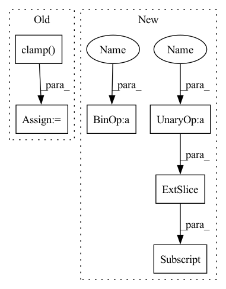

Pattern ID :28930
Before Change
k_offset = torch.clamp(k_offset, min=0, max=heatmaps.shape[2] - 1)
for offset_2 in offsets:
l_offset = l + offset_2
l_offset = torch.clamp( l_offset, min=0, max=heatmaps.shape[3] - 1)
vals = (
heatmaps[i, j, k_offset, l_offset].squeeze(-1).squeeze(-1)
) // get rid of singleton dims
vals_all.append(vals)After Change
Evaluate 4D heatmaps using a 3D location tensor (last dim is x, y coords).
num_pad = 3
heatmaps_padded = torch.zeros(heatmaps.shape[0], heatmaps.shape[1], heatmaps.shape[2] + num_pad*2, heatmaps.shape[3] + num_pad*2)
heatmaps_padded[:,:, num_pad:-num_pad, num_pad:-num_pad] = heatmaps
i = torch.arange(heatmaps_padded.shape[0]).reshape(-1, 1, 1, 1)
j = torch.arange(heatmaps_padded.shape[1]).reshape(1, -1, 1, 1)
k = locs[:, :, None, 1, None].type(torch.int64) + num_pad
l = locs[:, :, 0, None, None].type(torch.int64) + num_pad
pix_to_consider = int(np.ceil(sigma * 2.0)) // get all pixels within two stds.
offsets = list(np.arange(-pix_to_consider, pix_to_consider + 1))
vals_all = []
for offset in offsets:In pattern: SUPERPATTERN
Frequency: 3
Non-data size: 6
Instances Fragment ID: 85097714
Project Name: danbider/lightning-pose
Commit Name: 899341b8c2f42202457fc431488028789323befa
Time: 2022-07-25
Author: colehurwitz@gmail.com
File Name: lightning_pose/data/utils.py
M Class Name: AnonimousClass
N Class Name: AnonimousClass
M Method Name: evaluate_heatmaps_at_location(3)
N Method Name: evaluate_heatmaps_at_location(3)
M Parent Class:
N Parent Class:
M File Name: lightning_pose/data/utils.py
N File Name: lightning_pose/data/utils.py
M Start Line: 309
M End Line: 323
N Start Line: 309
N End Line: 324
Before Change
b = torch.bmm(fn_input, linear_param[0:1, :features].expand(batch, -1, -1))
c = torch.bmm(sequence_input, linear_param[0:1, features:].expand(batch, -1, -1))
a = torch.bmm(b, c)
o = a.clamp(min=0) // torch.bmm(a, activate.expand(batch, -1, -1))
o, _ = o.qr()
return o
After Change
class ReversibleRNNFunction(torch.autograd.Function):
@staticmethod
def _single_calc(fn_input, sequence_input, linear_param, activate):
features = fn_input.size(2)
batch = fn_input.size(0)
fn_input = torch.nn.functional.instance_norm(fn_input)
fn_input = torch.nn.functional.relu(fn_input)
b = torch.bmm(fn_input, linear_param[0:1, :features].expand(batch, -1, -1))
c = torch.bmm(sequence_input, linear_param[0:1, features:features * 2].expand(batch, -1, -1))
o = torch.nn.functional.instance_norm(b * c)
o = torch.nn.functional.relu(o)
o = torch.bmm(o, linear_param[0:1, features * 2:] .expand(batch, -1, -1))
o, _ = o.qr()
return o
Fragment ID: 85097729
Project Name: homebrewnlp/homebrewnlp
Commit Name: a30cf3c5ad3a1ab1d09712db6f920c59d9525def
Time: 2021-06-20
Author: 39779310+ClashLuke@users.noreply.github.com
File Name: module.py
M Class Name: ReversibleRNNFunction
N Class Name: ReversibleRNNFunction
M Method Name: _single_calc(4)
N Method Name: _single_calc(4)
M Parent Class: torch.autograd.Function
N Parent Class: torch.autograd.Function
M File Name: module.py
N File Name: module.py
M Start Line: 9
M End Line: 12
N Start Line: 7
N End Line: 15
Before Change
vals_all = []
for offset in offsets:
k_offset = k + offset
k_offset = torch.clamp( k_offset, min=0, max=heatmaps.shape[2] - 1)
for offset_2 in offsets:
l_offset = l + offset_2
l_offset = torch.clamp(l_offset, min=0, max=heatmaps.shape[3] - 1)
vals = (After Change
sigma: Union[float, int] = 1.25, // sigma used for generating heatmaps
) -> TensorType["batch", "num_keypoints"]:
Evaluate 4D heatmaps using a 3D location tensor (last dim is x, y coords).
num_pad = 3
heatmaps_padded = torch.zeros(heatmaps.shape[0], heatmaps.shape[1], heatmaps.shape[2] + num_pad*2, heatmaps.shape[3] + num_pad*2)
heatmaps_padded[:,:, num_pad:-num_pad, num_pad:-num_pad] = heatmaps
i = torch.arange(heatmaps_padded.shape[0]).reshape(-1, 1, 1, 1)
j = torch.arange(heatmaps_padded.shape[1]).reshape(1, -1, 1, 1)
k = locs[:, :, None, 1, None].type(torch.int64) + num_pad
l = locs[:, :, 0, None, None].type(torch.int64) + num_pad
pix_to_consider = int(np.ceil(sigma * 2.0)) // get all pixels within two stds.
offsets = list(np.arange(-pix_to_consider, pix_to_consider + 1))
vals_all = [] Fragment ID: 85097719
Project Name: danbider/lightning-pose
Commit Name: 899341b8c2f42202457fc431488028789323befa
Time: 2022-07-25
Author: colehurwitz@gmail.com
File Name: lightning_pose/data/utils.py
M Class Name: AnonimousClass
N Class Name: AnonimousClass
M Method Name: evaluate_heatmaps_at_location(3)
N Method Name: evaluate_heatmaps_at_location(3)
M Parent Class:
N Parent Class:
M File Name: lightning_pose/data/utils.py
N File Name: lightning_pose/data/utils.py
M Start Line: 309
M End Line: 323
N Start Line: 309
N End Line: 324
Before Change
k_offset = torch.clamp(k_offset, min=0, max=heatmaps.shape[2] - 1)
for offset_2 in offsets:
l_offset = l + offset_2
l_offset = torch.clamp( l_offset, min=0, max=heatmaps.shape[3] - 1)
vals = (
heatmaps[i, j, k_offset, l_offset].squeeze(-1).squeeze(-1)
) // get rid of singleton dims
vals_all.append(vals)After Change
sigma: Union[float, int] = 1.25, // sigma used for generating heatmaps
) -> TensorType["batch", "num_keypoints"]:
Evaluate 4D heatmaps using a 3D location tensor (last dim is x, y coords).
num_pad = 3
heatmaps_padded = torch.zeros(heatmaps.shape[0], heatmaps.shape[1], heatmaps.shape[2] + num_pad*2, heatmaps.shape[3] + num_pad*2)
heatmaps_padded[:,:, num_pad:-num_pad, num_pad:-num_pad] = heatmaps
i = torch.arange(heatmaps_padded.shape[0]).reshape(-1, 1, 1, 1)
j = torch.arange(heatmaps_padded.shape[1]).reshape(1, -1, 1, 1)
k = locs[:, :, None, 1, None].type(torch.int64) + num_pad
l = locs[:, :, 0, None, None].type(torch.int64) + num_pad
pix_to_consider = int(np.ceil(sigma * 2.0)) // get all pixels within two stds.
offsets = list(np.arange(-pix_to_consider, pix_to_consider + 1)) Fragment ID: 85097724
Project Name: danbider/lightning-pose
Commit Name: e97324b9a017aacba50492fd4eb58af7bd9ae167
Time: 2022-07-25
Author: colehurwitz@gmail.com
File Name: lightning_pose/data/utils.py
M Class Name: AnonimousClass
N Class Name: AnonimousClass
M Method Name: evaluate_heatmaps_at_location(3)
N Method Name: evaluate_heatmaps_at_location(3)
M Parent Class:
N Parent Class:
M File Name: lightning_pose/data/utils.py
N File Name: lightning_pose/data/utils.py
M Start Line: 309
M End Line: 323
N Start Line: 309
N End Line: 324